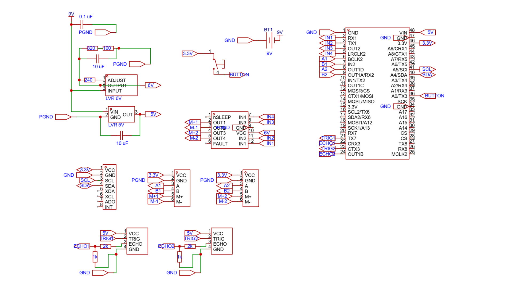
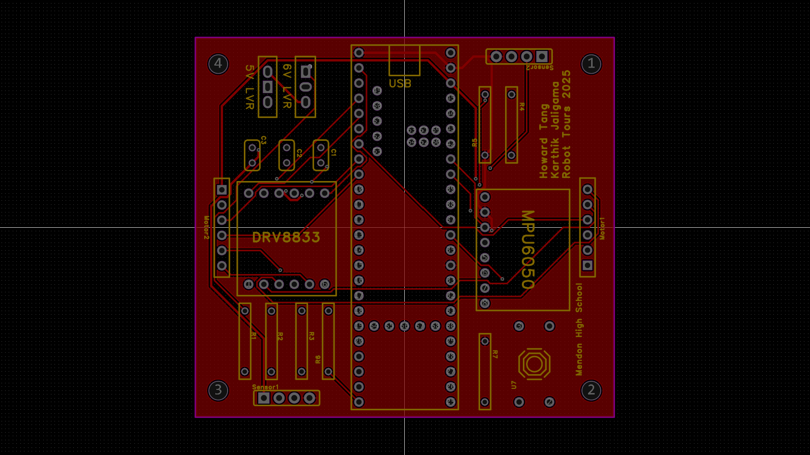

Design & Build
PCB Design
Custom PCB designed and manufactured with EasyEDA.
Integrates: Teensy 4.0, voltage regulators, IMU, motor driver, killswitch.


Custom Parts
Manufactured via FDM and laser cutting.

Design Evolution
Cycle 1:
Kit + LCD
Problems: bulky, poor traction, inaccurate
Cycle 2:
Upgraded wheels (better traction), x4 ultrasonic sensors, +1 IMU
FATAL FLAW: can't turn!
Cycle 3:
Revert to differential drive, x2 ultrasonic sensors, +2 stabilizing bearings
Problem: bulky, ultrasonic sensors inaccurate
Cycle 4:
Custom PCB, Arduino Uno -> Teensy 4.0, ultrasonic -> ToF, compact